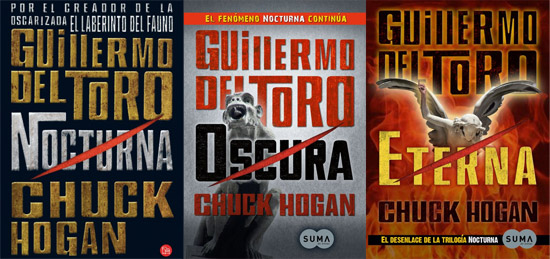

Novelas

En 2009 Guillermo del Toro debutó como escritor al verse publicada su primera novela: Nocturna,
primer volumen de la Trilogía de la Oscuridad (Nocturna, Oscura y Eterna), escrita conjuntamente
con Chuck Hogan y que trata de un virus que transforma a las personas en vampiros. En el segundo
semestre de 2010 Del Toro y Hogan estrenan mundialmente Oscura, la segunda entrega de la
Trilogía.premios óscar por mejor película extranjera y fue candidato a mejor guionista.